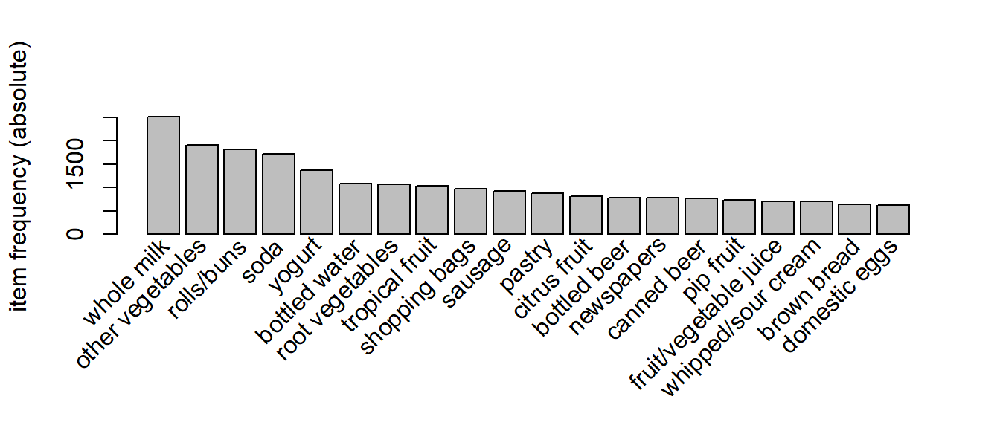

Almost every people has receipt a recommendation from some Recommender System even if he/she has never heard about it. Selling websites like Amazon or simple browsers as Googleâs are training models from data in order to provide the best product or website to their customers given some information such as sociodemographic characteristics, historical purchased products or likes in websites. Obviously, Recommender Systems (RecSys) are on the spot of many companies and institutions who are trying to provide the most adequate item for a given person.
In this session, we start by reviewing the different typologies of RecSys. Next, we formalize the problem and introduce the data sets of the case study. The first one is related to transactions in a grocery store and the second one contains users and its listened band music. Finally, we build from the scratch different RecSys methods and apply them for providing merchandasing strategies and product/groups recommendations. The code for applying Collaborative Filtering is not efficient since it is implemented by nested loop, however, in this way we can follow easily each step. The RData file that contains all the results can be dowload here.
Lets denote by \(U=\{u_1, u_2,...\}\) the set of total users in the sample and \(I=\{i_1,i_2,...\}\) the list of all items (goods or services) that a given user could consume. Our data set will consist in a binary matrix \(R\) of dimension \(|U| \times |I|\), being \(|A|\) the number of elements in the set \(A\).
The following table represents a data set of \(5\) users and \(6\) items.
set.seed(01071991)
R=matrix(rbinom(30,1,0.5), nrow=5, ncol=6)
colnames(R)<-c('Item 1', 'Item 2','Item 3','Item 4','Item 5','Item 6')
rownames(R)<-c('User 1', 'User 2','User 3','User 4','User 5')
kable(R)| Item 1 | Item 2 | Item 3 | Item 4 | Item 5 | Item 6 | |
|---|---|---|---|---|---|---|
| User 1 | 0 | 0 | 1 | 1 | 0 | 1 |
| User 2 | 1 | 1 | 1 | 1 | 0 | 1 |
| User 3 | 1 | 1 | 1 | 0 | 1 | 1 |
| User 4 | 1 | 1 | 0 | 0 | 0 | 0 |
| User 5 | 0 | 1 | 1 | 0 | 1 | 1 |
each cell \(R(u_i,i_j)=1\) if the user \(u_i\) has bought the product \(i_j\) and \(0\) otherwise. For instance, the User 1, \(u_1\), consumed \(I_{u_1}=\{i_3, i_4, i_6\}\) while the User 3, \(u_3\), bought everything unless the item 4 \(I_{u_1}=\{i_1, i_2, i_3, i_5, i_6\}\).
The main goal of a RecSys is to propose a item to a user that 1) It has not been consumed by him/her but 2) the user would like the new item with high chance. Different definitions of what it is a item with ‘high chance’ yield diferent RecSys.
This data set gathers a collection of receipts with each line representing 1 receipt and the items purchased. The data set is available from R but it can be downloaded groceries.csv, however it comes by default with an special format. If the file is open by a plain text editor, one could observe that each row represents a enumeration of products corresponding with the items of a single transaction.
In the following chunk of code, we convert this format to a binary matrix as explained before. Each line is called a transaction and each column in a row represents an item.
data(Groceries)
Shopping_Cart <- read.transactions("courseRBA_2/groceries.csv", sep=",")
dataMatrixGrocery<-as(Shopping_Cart, "matrix")*1; rownames(dataMatrixGrocery)<-c(1:nrow(dataMatrixGrocery))
kable(dataMatrixGrocery[10:15,160:169])| UHT-milk | vinegar | waffles | whipped/sour cream | whisky | white bread | white wine | whole milk | yogurt | zwieback | |
|---|---|---|---|---|---|---|---|---|---|---|
| 10 | 0 | 0 | 0 | 0 | 0 | 0 | 0 | 1 | 0 | 0 |
| 11 | 0 | 0 | 0 | 0 | 0 | 1 | 0 | 0 | 0 | 0 |
| 12 | 0 | 0 | 0 | 0 | 0 | 0 | 0 | 1 | 1 | 0 |
| 13 | 0 | 0 | 0 | 0 | 0 | 0 | 0 | 0 | 0 | 0 |
| 14 | 0 | 0 | 0 | 0 | 0 | 0 | 0 | 0 | 0 | 0 |
| 15 | 0 | 0 | 0 | 0 | 0 | 0 | 0 | 0 | 0 | 0 |
We have in total 9835 transactions and 169 items. For example, in the transaction number \(10\) was bought whole milk and in the number \(12\) the client bought whole milk and yogurt among others.
The data set contains contains information about radio listener in Germany. The original data set contains information about users, their gender, their age, and which artists they have listened. However we will just used the artics that a given users have listened. data about a matrix where each row represents a user, and each column represents and band. The data set we use here can be download here.
dataMatrixMusicUsers <- read.csv(file="courseRBA_2/lastfmmatrix.csv"); rownames(dataMatrixMusicUsers)<-dataMatrixMusicUsers[,1]
dataMatrixMusic <- (dataMatrixMusicUsers[,!(names(dataMatrixMusicUsers) %in% c("user"))])Lets look at a sample of our data. We have in total 1257 users and 285 different bands. The output looks something like this:
kable(dataMatrixMusic[20:25,c(1,2:8)])| a.perfect.circle | abba | ac.dc | adam.green | aerosmith | afi | air | alanis.morissette | |
|---|---|---|---|---|---|---|---|---|
| 383 | 0 | 0 | 0 | 0 | 0 | 0 | 0 | 0 |
| 422 | 0 | 0 | 0 | 0 | 0 | 0 | 0 | 0 |
| 428 | 0 | 0 | 1 | 0 | 0 | 0 | 0 | 0 |
| 438 | 0 | 0 | 0 | 0 | 0 | 0 | 0 | 0 |
| 447 | 0 | 0 | 0 | 0 | 0 | 0 | 0 | 0 |
| 458 | 0 | 0 | 0 | 0 | 0 | 0 | 0 | 0 |
For example, the user \(428\) has listened ACDC.
Mainly, the literature makes a different between:
The following schema was taken from the arcicle “Recommendation systems: Principles, methods and evaluation” by Isinkaye et al (2015). The only difference is that the authors do not consider the Non-personalized and stereotype-based methods as a RecSys since they are mainly based on descriptive statistics.
Contend based methods take advantage of the information of the product. For example, if an user listens Metallica, a band of metal from the 90s, a possible recommendations would be 1) other bands of metal such as Audioslave, 2) a contemporaneous group such that ACDC, 3) other enemy group (literally) such as Megadeth or 4) a band as Exodus original group of one of the guitar players of Metallica.
Method based on descriptive statistics such us mean, mode, maximum, minimum… Below we have two examples, one from Amazon and another from Netflix. On one hand, the first one just recommends the iron machines that have been bought more times. On other hand, Netflix recommend the most times watched films/series.
For the Grocery data set one could conclude that milk should be located in a very visible place of the store since is the most common sell as we can see in the following frequency plot,
# Create an item frequency plot for the top 20 items
itemFrequencyPlot(Groceries,topN=20,type="absolute")
About the bands data set, one could recommend to an user the group top ten of the most played, that is
names(sort(colSums(dataMatrixMusic), decreasing=TRUE)[1:10])
## [1] "linkin.park" "coldplay"
## [3] "red.hot.chili.peppers" "rammstein"
## [5] "system.of.a.down" "metallica"
## [7] "die.toten.hosen" "billy.talent"
## [9] "the.killers" "the.beatles"The basic idea of these systems is that if users have revealed the same interests in the past â if they listened or bought the same band or product, for instance â they will also have similar tastes in the future. So, if, for example, user \(u_{i_1}\) and user \(u_{i_2}\) have a history that is strongly similar each other and user \(u_{i_1}\) has recently listened a group that \(u_{i_2}\) has not, the basic rationale is to propose this group also to \(u_{i_2}\). In this way, the user \(u_{i_1}\) collaborates to filter the most promising bands from a large set.
Following this logic one could predict and recommend items to users based on preference similarities. There are three types of collaborative filtering:
Association rules are a data mining technique that by product of an algorithm call ‘appriori’ ends up with a set of relations among items that can be studied with a probability approach. In contrast, the key issue of item based and user based collaborative filterin is how to define similarity. One could think about taking the distance such as \(L^P\) or Hausdorff distance,. For example, consider that we want to measure the similarity between items \(i_1\) and \(i_2\) so its respective vectors are \(A=R(,i_1)\) and \(B=R(,i_2)\). We could define the similarity of \(i_1\) and \(i_2\) as the distance \(d(i_1, i_2)=\sum_{j=1}^{|U|}((R(,i_1)-R(,i_2))^p)^{1/p}\) being very similar for values close to 0. However, the most employed measure is the so call Cosine Similarity defined as follows \[ Similarity(A,B)=\frac{A B}{||A||_2 ||B||_2}=\frac{\sum_{j=1}^{|U|} A_j B_j}{\sqrt(\sum_{j=1}^{|U|}A_j^2)\sqrt(\sum_{j=1}^{|U|}B_j^2)}.\]
The important thing to know is that the resulting number represents how âsimilarâ the vector \(A\) is with respect the vector \(B\). The following chunk code is a function for computing the similarity between two vectors.
getCosine <- function(x,y){
similarity <- sum(x*y) / (sqrt(sum(x*x)) * sqrt(sum(y*y)))
return(similarity)
}The outcome of this type of technique, in simple terms, is a set of rules that can be understood as âif this, then thatâ.
This gives us our rules which are represented as follows: \[ \{ i_1,i_2 \} \rightarrow \{ i_k \}\] Which can be read as âif a user buys an item in the item set on the left hand side, then the user will likely buy the item on the right hand side tooâ. A more human readable example is: \[ \{coffee,sugar \} \rightarrow \{milk\}\] If a customer buys coffee and sugar, then they are also likely to buy milk. With this we can understand three important ratios; the support, confidence and lift. We describe the significance of these in the following bullet points, but if you are interested in a formal mathematical definition you can find it on wikipedia.
Support of item \(i_j\). The fraction of which our item set occurs in our dataset, in other words, the empirical probability of observing item \(i_j\) if we select an item randomly.
Confidence of \(i_{j_1} \rightarrow i_{j_2}\). Probability that a rule is correct for a new transaction with items on the left. Conditional probability of observing \(i_{j_2}\) given that \(i_{j_1}\) was observed.
\[P(i_{j_2} | i_{j_1}) = \frac{P(i_{j_2} \cap i_{j_1})}{P(i_{j_1})}\]
Lift of \(i_{j_1} \rightarrow i_{j_2}\). The ratio by which the confidence of a rule exceeds the expected confidence. Probability of the itersecion divided by the product of the probabilities.
\[Lift(i_{j_1} \rightarrow i_{j_2})=\frac{P(i_{j_2} \cap i_{j_1})}{P(i_{j_2}) P( i_{j_1})},\]
If this number is \(1\) it is because both items are independent.
We are now ready to mine some rules. It will be done by using the packages ‘aules’ and the function ‘apriori’ (name given by the algorithm that computes the rules). This function require a minimum support and confidence. We set the minimum support to 0.001. We set the minimum confidence of 0.8. We then show the top 5 rules,
# Get the rules
rules <- apriori(Groceries, parameter = list(supp = 0.001, conf = 0.8))
## Apriori
##
## Parameter specification:
## confidence minval smax arem aval originalSupport maxtime support minlen
## 0.8 0.1 1 none FALSE TRUE 5 0.001 1
## maxlen target ext
## 10 rules FALSE
##
## Algorithmic control:
## filter tree heap memopt load sort verbose
## 0.1 TRUE TRUE FALSE TRUE 2 TRUE
##
## Absolute minimum support count: 9
##
## set item appearances ...[0 item(s)] done [0.00s].
## set transactions ...[169 item(s), 9835 transaction(s)] done [0.00s].
## sorting and recoding items ... [157 item(s)] done [0.00s].
## creating transaction tree ... done [0.00s].
## checking subsets of size 1 2 3 4 5 6 done [0.01s].
## writing ... [410 rule(s)] done [0.00s].
## creating S4 object ... done [0.00s].
# Show the top 5 rules, but only 2 digits
options(digits=2)
inspect(rules[1:5])
## lhs rhs support confidence lift
## [1] {liquor,red/blush wine} => {bottled beer} 0.0019 0.90 11.2
## [2] {curd,cereals} => {whole milk} 0.0010 0.91 3.6
## [3] {yogurt,cereals} => {whole milk} 0.0017 0.81 3.2
## [4] {butter,jam} => {whole milk} 0.0010 0.83 3.3
## [5] {soups,bottled beer} => {whole milk} 0.0011 0.92 3.6We can call the function summary for obtaining some more information about the result,
summary(rules)
## set of 410 rules
##
## rule length distribution (lhs + rhs):sizes
## 3 4 5 6
## 29 229 140 12
##
## Min. 1st Qu. Median Mean 3rd Qu. Max.
## 3.0 4.0 4.0 4.3 5.0 6.0
##
## summary of quality measures:
## support confidence lift
## Min. :0.00102 Min. :0.80 Min. : 3.1
## 1st Qu.:0.00102 1st Qu.:0.83 1st Qu.: 3.3
## Median :0.00122 Median :0.85 Median : 3.6
## Mean :0.00125 Mean :0.87 Mean : 4.0
## 3rd Qu.:0.00132 3rd Qu.:0.91 3rd Qu.: 4.3
## Max. :0.00315 Max. :1.00 Max. :11.2
##
## mining info:
## data ntransactions support confidence
## Groceries 9835 0.001 0.8Often we will want the most relevant rules first because, for example, one would want to have the most likely rules. We can easily sort by confidence by executing the following code.
rules<-sort(rules, by="confidence", decreasing=TRUE)
inspect(rules[1:5])
## lhs rhs support confidence lift
## [1] {rice,
## sugar} => {whole milk} 0.0012 1 3.9
## [2] {canned fish,
## hygiene articles} => {whole milk} 0.0011 1 3.9
## [3] {root vegetables,
## butter,
## rice} => {whole milk} 0.0010 1 3.9
## [4] {root vegetables,
## whipped/sour cream,
## flour} => {whole milk} 0.0017 1 3.9
## [5] {butter,
## soft cheese,
## domestic eggs} => {whole milk} 0.0010 1 3.9We can limit the number of items by including âmaxlenâ parameter to the apriori function,
rules <- apriori(Groceries, parameter = list(supp = 0.001, conf = 0.8,maxlen=3))
## Apriori
##
## Parameter specification:
## confidence minval smax arem aval originalSupport maxtime support minlen
## 0.8 0.1 1 none FALSE TRUE 5 0.001 1
## maxlen target ext
## 3 rules FALSE
##
## Algorithmic control:
## filter tree heap memopt load sort verbose
## 0.1 TRUE TRUE FALSE TRUE 2 TRUE
##
## Absolute minimum support count: 9
##
## set item appearances ...[0 item(s)] done [0.00s].
## set transactions ...[169 item(s), 9835 transaction(s)] done [0.00s].
## sorting and recoding items ... [157 item(s)] done [0.00s].
## creating transaction tree ... done [0.00s].
## checking subsets of size 1 2 3
## Warning in apriori(Groceries, parameter = list(supp = 0.001, conf =
## 0.8, : Mining stopped (maxlen reached). Only patterns up to a length of 3
## returned!
## done [0.00s].
## writing ... [29 rule(s)] done [0.00s].
## creating S4 object ... done [0.00s].
inspect(rules[1:5])
## lhs rhs support confidence lift
## [1] {liquor,red/blush wine} => {bottled beer} 0.0019 0.90 11.2
## [2] {curd,cereals} => {whole milk} 0.0010 0.91 3.6
## [3] {yogurt,cereals} => {whole milk} 0.0017 0.81 3.2
## [4] {butter,jam} => {whole milk} 0.0010 0.83 3.3
## [5] {soups,bottled beer} => {whole milk} 0.0011 0.92 3.6Now that we know how to generate rules, limit the output, lets say we wanted to target items to generate rules. There are two types of targets we might be interested in that are illustrated with an example of âwhole milkâ:
This essentially means we want to set either the Left Hand Side and Right Hand Side. This is not difficult to do with R! Answering the first question we adjust our apriori() function as follows:
rules<-apriori(data=Groceries, parameter=list(supp=0.001,conf = 0.08),
appearance = list(default="lhs",rhs="whole milk"),
control = list(verbose=F))
rules<-sort(rules, decreasing=TRUE,by="confidence")
inspect(rules[1:5])
## lhs rhs support confidence lift
## [1] {rice,
## sugar} => {whole milk} 0.0012 1 3.9
## [2] {canned fish,
## hygiene articles} => {whole milk} 0.0011 1 3.9
## [3] {root vegetables,
## butter,
## rice} => {whole milk} 0.0010 1 3.9
## [4] {root vegetables,
## whipped/sour cream,
## flour} => {whole milk} 0.0017 1 3.9
## [5] {butter,
## soft cheese,
## domestic eggs} => {whole milk} 0.0010 1 3.9Likewise, we can set the left hand side to be âwhole milkâ and find its antecedents. Note the following:
rules<-apriori(data=Groceries, parameter=list(supp=0,conf =0.15,minlen=2),appearance=list(default="rhs",lhs="whole milk"),control = list(verbose=F))
rules<-sort(rules, decreasing=TRUE,by="confidence")
inspect(rules[1:5])
## lhs rhs support confidence lift
## [1] {whole milk} => {other vegetables} 0.075 0.29 1.5
## [2] {whole milk} => {rolls/buns} 0.057 0.22 1.2
## [3] {whole milk} => {yogurt} 0.056 0.22 1.6
## [4] {whole milk} => {root vegetables} 0.049 0.19 1.8
## [5] {whole milk} => {tropical fruit} 0.042 0.17 1.6We first calculate the similarity of each song with the rest of the songs. This means that we want to compare each column in our âdataMatrixMusicâ data set with every other column in the data set. Specifically, we will define similarity with the âCosine Similarityâ.
dataMatrixMusic.similarity <- matrix(NA, nrow=ncol(dataMatrixMusic),ncol=ncol(dataMatrixMusic),dimnames=list(colnames(dataMatrixMusic),colnames(dataMatrixMusic)))
# Loop through the columns
for(i in 1:ncol(dataMatrixMusic)) {
# Loop through the columns for each column
for(j in 1:ncol(dataMatrixMusic)) {
# Fill in placeholder with cosine similarities
dataMatrixMusic.similarity[i,j]<-getCosine(as.matrix(dataMatrixMusic[i]),as.matrix(dataMatrixMusic[j]))
}
}
# Back to dataframe
dataMatrixMusic.similarity <- as.data.frame(dataMatrixMusic.similarity)dataMatrixMusic.similarity[1:5,1:5]
## a.perfect.circle abba ac.dc adam.green aerosmith
## a.perfect.circle 1.000 0.000 0.018 0.052 0.063
## abba 0.000 1.000 0.052 0.025 0.061
## ac.dc 0.018 0.052 1.000 0.113 0.177
## adam.green 0.052 0.025 0.113 1.000 0.057
## aerosmith 0.063 0.061 0.177 0.057 1.000Note: For loops in R are infernally slow. We use as.matrix() to transform the columns into matrices since matrix operations run a lot faster. We transform the similarity matrix into a data.frame for later processes that we will use.
We are now in a position to make recommendations! We look at the top 10 neighbours of each song â those would be the recommendations we make to people listening to those songs. We start off by creating a placeholder and then we need to find the neighbours. This is another loop but runs much faster.
# Get the top 10 neighbours for each
top=10+1
dataMatrix.neighbours <- matrix(NA, nrow=ncol(dataMatrixMusic.similarity),ncol=top,dimnames=list(colnames(dataMatrixMusic.similarity)))
for(i in 1:ncol(dataMatrix.ibs)){
dataMatrix.neighbours[i,] <-(t(head(n=11,rownames(dataMatrixMusic.similarity[order(dataMatrixMusic.similarity[,i],decreasing=TRUE),][i]))))
}
colnames(dataMatrix.neighbours)<-c('band', paste('top', c(1:10), sep=''))
kable(dataMatrix.neighbours[1:5,2:top])| top1 | top2 | top3 | top4 | top5 | top6 | top7 | top8 | top9 | top10 | |
|---|---|---|---|---|---|---|---|---|---|---|
| a.perfect.circle | tool | dredg | deftones | porcupine.tree | nine.inch.nails | incubus | system.of.a.down | opeth | the.smashing.pumpkins | radiohead |
| abba | madonna | robbie.williams | elvis.presley | michael.jackson | queen | the.beatles | kelly.clarkson | groove.coverage | duffy | mika |
| ac.dc | red.hot.chili.peppers | metallica | iron.maiden | the.offspring | black.sabbath | die.toten.hosen | rammstein | judas.priest | the.beatles | hammerfall |
| adam.green | the.libertines | the.strokes | babyshambles | radiohead | franz.ferdinand | the.kooks | foo.fighters | the.white.stripes | the.beatles | arctic.monkeys |
| aerosmith | u2 | led.zeppelin | metallica | ac.dc | lenny.kravitz | the.rolling.stones | jack.johnson | red.hot.chili.peppers | robbie.williams | oasis |
This means for those listening to Abba we would recommend Madonna and Robbie Williams. Likewise for people listening to ACDC we would recommend the Red Hot Chilli Peppers and Metallica.
We will need our similarity matrix for User Based recommendations. The process behind creating a score matrix for the User Based recommendations is pretty straight forward:
We can start by creating a helper function to calculate the score mentioned in the last step.
# Lets make a helper function to calculate the scores
getScore <- function(history, similarities)
{
x <- sum(history*similarities)/sum(similarities)
x
}holder <- matrix(NA, nrow=nrow(dataMatrixMusicUsers),ncol=ncol(dataMatrixMusicUsers)-1,dimnames=list((dataMatrixMusicUsers$user),colnames(dataMatrixMusicUsers[-1])))
# Loop through the users (rows)
for(i in 1:nrow(holder))
{
# Loops through the products (columns)
for(j in 1:ncol(holder))
{
# Get the user's name and th product's name
user <- rownames(holder)[i]
product <- colnames(holder)[j]
# We do not want to recommend products you have already consumed
# If you have already consumed it, we store an empty string
if(as.integer(dataMatrixMusicUsers[dataMatrixMusicUsers$user==user,product]) == 1)
{
holder[i,j]<-""
} else {
# We first have to get a product's top 10 neighbours sorted by similarity
topN<-((head(n=11,(dataMatrixMusic.similarity[order(dataMatrixMusic.similarity[,product],decreasing=TRUE),][product]))))
topN.names <- as.character(rownames(topN))
topN.similarities <- as.numeric(topN[,1])
# Drop the first one because it will always be the same
topN.similarities<-topN.similarities[-1]
topN.names<-topN.names[-1]
# We then get the user's purchase history for those 10 items
topN.purchases<- dataMatrixMusicUsers[,c("user",topN.names)]
topN.userPurchases<-topN.purchases[topN.purchases$user==user,]
topN.userPurchases <- as.numeric(topN.userPurchases[!(names(topN.userPurchases) %in% c("user"))])
# We then calculate the score for that product and that user
holder[i,j]<-getScore(similarities=topN.similarities,history=topN.userPurchases)
} # close else statement
} # end product for loop
} # end user for loop
dataMatrixMusic.user.scores <- holder
dataMatrixMusic.user.scores.holder <- matrix(NA, nrow=nrow(dataMatrixMusic.user.scores),ncol=100,dimnames=list(rownames(dataMatrixMusic.user.scores)))
for(i in 1:nrow(dataMatrixMusic.user.scores)){
dataMatrixMusic.user.scores.holder[i,] <- names(head(n=100,(dataMatrixMusic.user.scores[,order(dataMatrixMusic.user.scores[i,],decreasing=TRUE)])[i,]))
}The loop starts by taking each user (row) and then jumps into another loop that takes each column (artists). We then store the userâs name and artist name in variables to use them easily later. We then use an if statement to filter out artists that a user has already listened to â this is a business case decision.
The next bit gets the item based similarity scores for the artist under consideration.
It is important to note the number of artists you pick matters. We pick the top 10. We store the similarities score and song names. We also drop the first column because, as we saw, it always represents the same song. Weâre almost there. We just need the userâs purchase history for the top 10 songs.
We use the original data set to get the purchases of our usersâ top 10 purchases. We filter out our current user in the loop and then filter out purchases that match the user. We are now ready to calculate the score and store it in our holder matrix:
Once we are done we can store the results in a data frame. The results should look something like this:
kable(dataMatrixMusic.user.scores[1:5,1:10])| a.perfect.circle | abba | ac.dc | adam.green | aerosmith | afi | air | alanis.morissette | alexisonfire | alicia.keys | |
|---|---|---|---|---|---|---|---|---|---|---|
| 1 | 0 | 0 | 0.204405399744717 | 0 | 0.266174512273766 | 0 | 0.118139774940785 | 0.186878798622001 | 0 | 0 |
| 33 | 0.0823426024461794 | 0 | 0.0959115320210641 | 0.0888852208491466 | 0 | 0.190638390075421 | 0.175416279232336 | 0.069720392848255 | 0 | |
| 42 | 0 | 0.0897665536183953 | 0 | 0 | 0 | 0 | 0 | 0 | 0 | 0 |
| 51 | 0.0823426024461794 | 0.0835681135086085 | 0 | 0.0835017734266233 | 0 | 0.0929543917995141 | 0 | 0 | 0.0670884792982441 | 0.081037422331836 |
| 62 | 0 | 0 | 0.11430458769156 | 0.0931968819518542 | 0.0882213669482593 | 0.0929543917995141 | 0 | 0.102627304422923 | 0.0670884792982441 | 0 |
This basically reads that for user 51 we would recommend abba first, then a perfect circle, and we would not recommend ACDC. This is not very pretty ⦠so lets make it pretty: We will create another holder matrix and for each user score we will sort the scores and store the artist names in rank order.